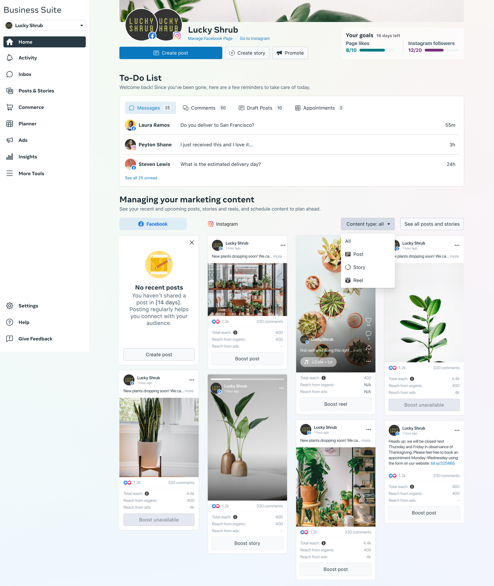
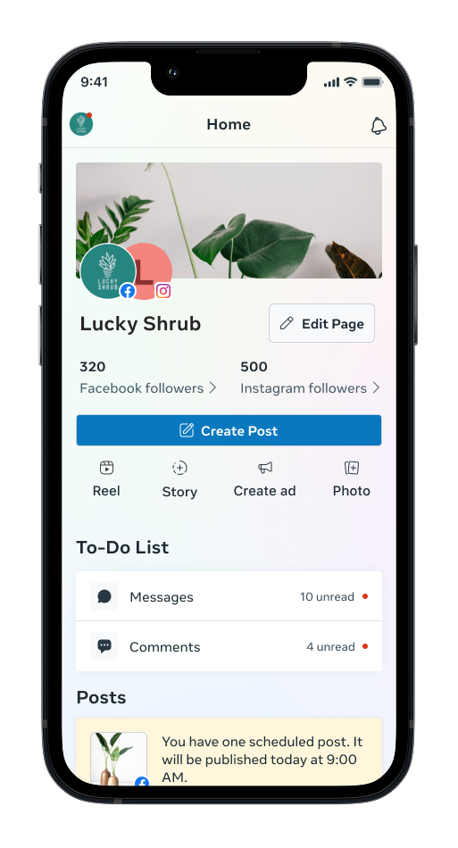
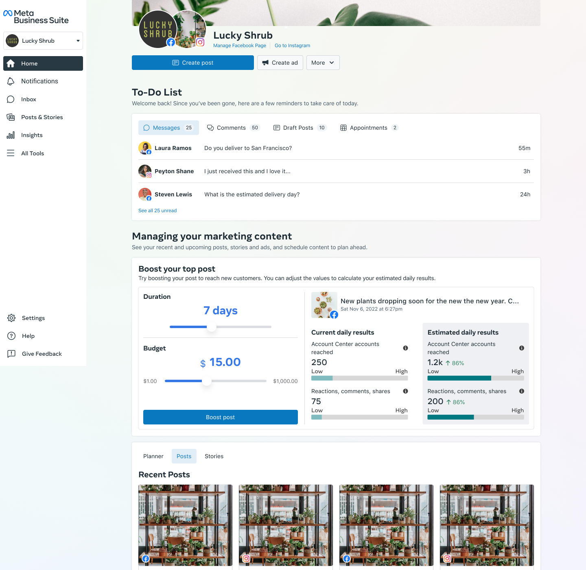
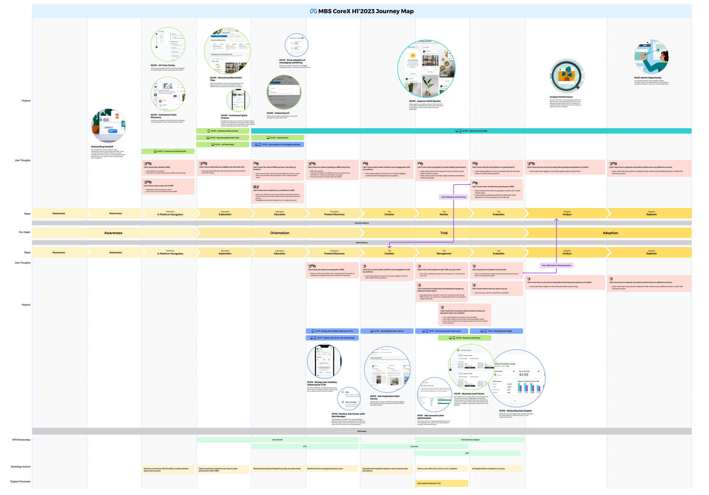

Meta's global sales organization relied on a patchwork of legacy tools, spreadsheets, and workarounds to manage their pipeline. Context switching and data silos cost thousands of hours per quarter and introduced error into critical revenue processes.
71% of SMB admins couldn't locate the action they came to MBS to take within the first 30 seconds of landing on Home — even when the entry point existed somewhere in the suite.
The most-used insights, actions, and notifications lived across 14+ disconnected surfaces, forcing admins to rebuild their own mental map of the platform every session.
Admins context-switched between FB, IG, and WhatsApp an average of 9 times per session, with no shared wayfinding or persistent context to ground them across apps.
We redesigned the core CRM experience from the ground up — consolidating workflows, surfacing contextual intelligence, and building a design system that could scale across Meta's global sales org.
The new platform reduced tool switching entirely, brought pipeline visibility to every level of leadership, and shipped with an accessible, component-driven design system adopted across 4 internal teams.
Home is the launchpad of Meta Business Suite — the screen we redesigned to lift weekly active users by making it the place to start every session. One view tells small business owners exactly what needs their attention today: recent posts, reels, and stories paired with their performance signals; a to-do strip covering unread messages, pending comments, draft posts, and upcoming appointments. From here, owners pivot into Inbox, Planner, Ads, or Insights without losing context. The redesign drove a 40% lift in weekly active users.

As lead designer across the Meta Business Suite product family, I extended the experience to the mobile app — the surface most small business owners actually live in. Mobile Home is built around the actions that don’t wait: unread messages and pending comments pin to the top of the to-do list so owners can respond in the moment, while a tight summary of follower counts, scheduled posts, and recent activity gives them a quick read on their social presence between tasks. Prioritizing timely engagement and a clean mobile-first hierarchy drove a meaningful lift in app signups and stronger session retention across the suite.

The Ads Slider Calculator gave small business owners a fast, tangible way to see what boosting their best content would actually do. Surfaced directly on Home next to the owner’s top-performing post, the calculator lets them adjust duration and budget and instantly compare current daily results against estimated daily results — accounts reached, reactions, comments, and shares — so the decision to boost stops feeling like a leap of faith. The pattern was successful enough that it was widely adopted across other surfaces in the Meta Ads platform.

A cross-platform advertiser journey map I drove to ground roadmap conversations in the actual experience of running ads across CoreX. I led the creation and the working sessions — mapping out every key moment, from setting up a campaign to optimizing creative to reviewing results — to surface gaps, overlapping ownership between teams, and the opportunities that mapped to our half’s goals. The artifact became the visual reference we kept returning to in leadership and roadmapping reviews, helping align stakeholders on which projects would actually move the metrics that mattered.
